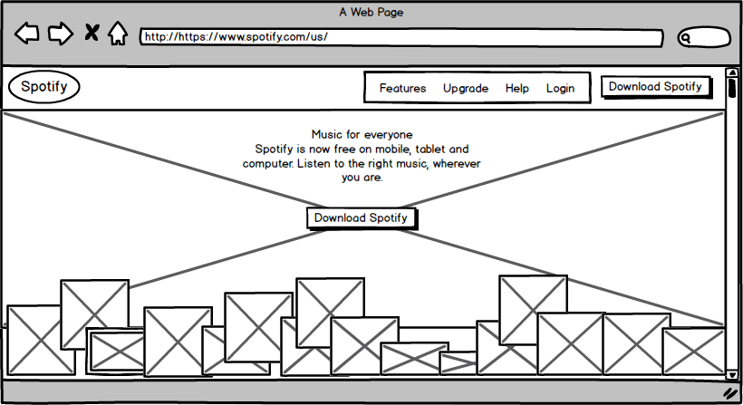
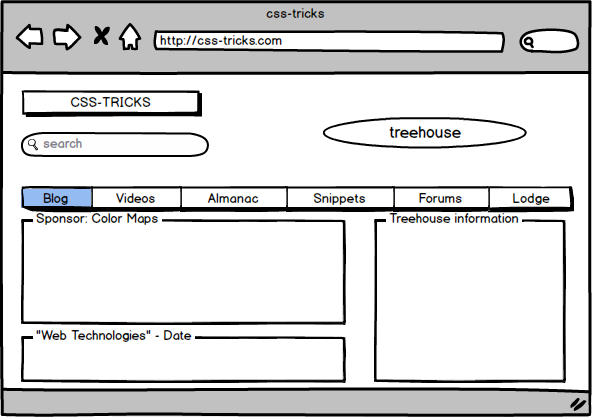
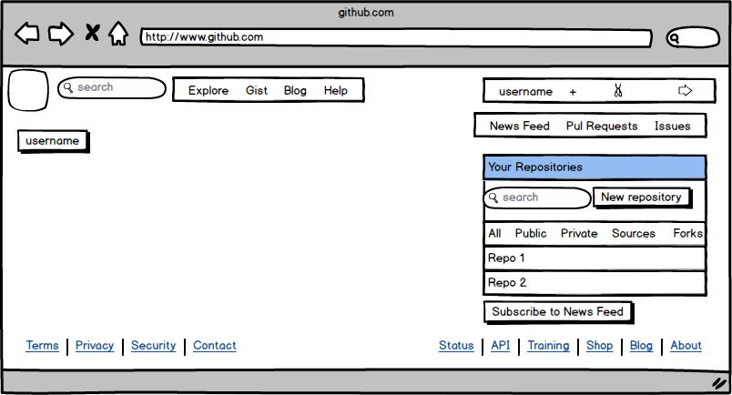

Websites - Wireframed
June 30.2014
A wireframe is a simplified blueprint of a screen design. Check out the wireframe versions of the websites I mentioned on my Technical Blog page. Click the image for a bigger version.
Spotify.com - There isn't much to read upon initial view. The home screen is to the point. It's main purpose is to draw in the viewer, as visitors of this website (as opposed to the application) are usually not yet subscribers. The huge image is followed by a potpourri of album art scattered about the bottom of the page. Because these smaller images are covered, it invites the user to scroll down: that's where the real presentation is made.
css-tricks.com - One of the most appealing things about this site is the beautiful color scheme. The wireframe takes that away from us. What we now realize is that half of the view is basically header and nav bar. There isn't much in terms of content before scrolling down to read what you came for. There is considerable space dedicated to treehouse, so it's safe to assume they're in cahootz. Nevertheless, the simplicity of this layout is appealing.
GitHub.com - I've somehow managed to make the GitHub visual experience even worse by reducing it to wireframe. See that huge gaping white space? That's what remains after closing the information boxes that used to be there upon first creating an account. Removing those boxes actually made the site easier to navigate because our eyes go straight for the good stuff, that is, our repositories. That's all we came for, I hope.